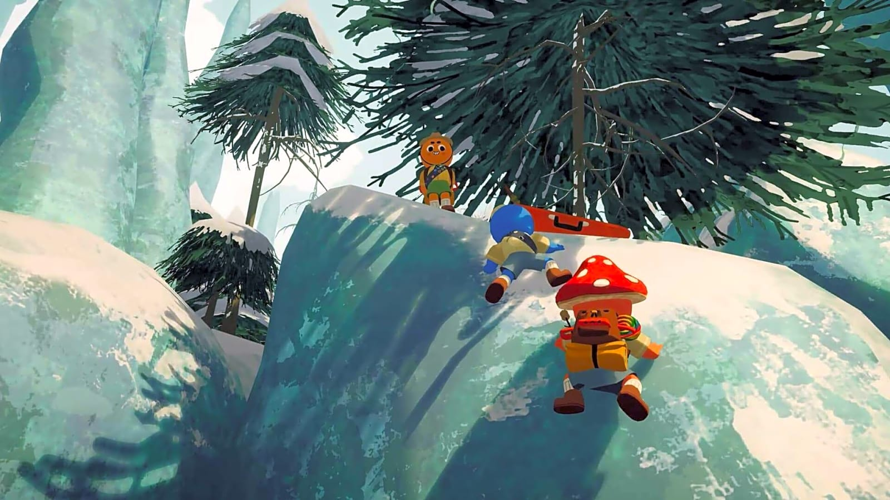
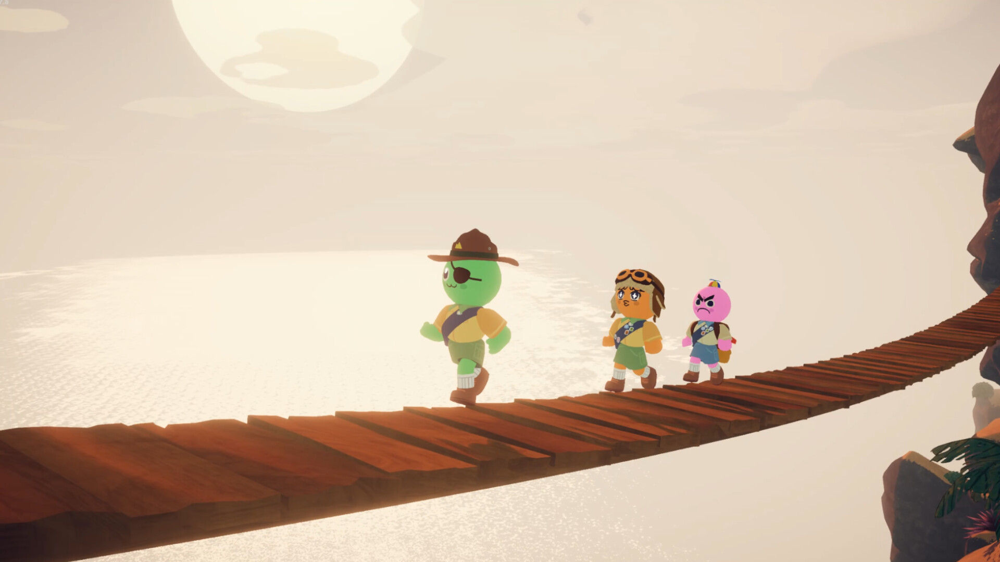
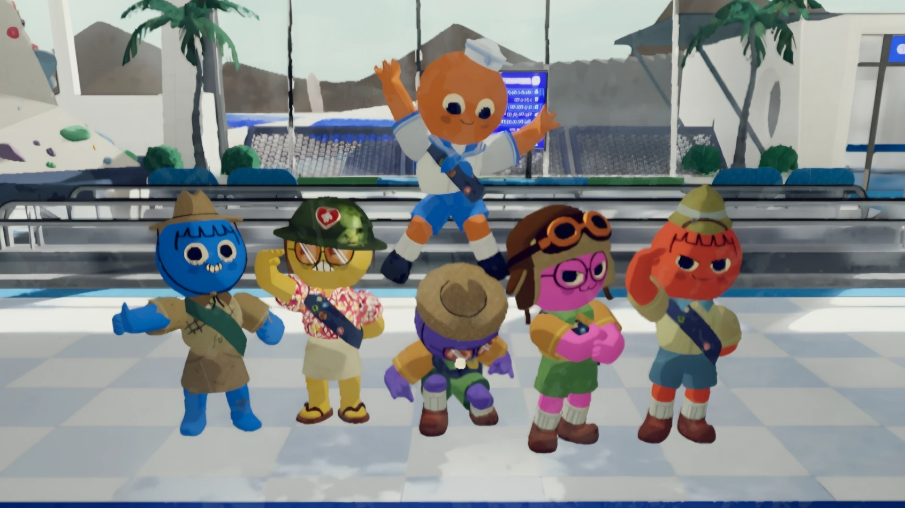
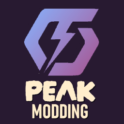

Fan Site
PEAK is a cooperative climbing survival game where players must scale a treacherous mountain on a mysterious island, managing resources, hazards, and teamwork to reach the summit.
In PEAK, players control Scouts—either solo or in teams of up to four—who awaken after a plane crash on an isolated island. The primary objective is to reach the Peak, the highest point of the island, where a rescue helicopter can be summoned using a flare. The game emphasizes trial-and-error gameplay, requiring players to discover safe foods, manage stamina, and utilize equipment effectively to survive the climb.
Players must carefully manage stamina, hunger, and injuries, as these factors directly affect climbing performance. Scavenging for food, tools, and survival items is essential. Items include energy drinks, climbing spikes, ropes, and the mysterious Anti-Rope, which can aid in overcoming obstacles. Players can carry a limited number of items, with backpacks allowing additional storage.
The island is divided into six biomes: Shore, Tropics, Alpine, Mesa, Caldera, and The Kiln. Each biome presents unique hazards such as giant urchins, rain, wind, blizzards, extreme heat, and lava. The map rotates daily, providing a new layout and challenges every 24 hours. Higher difficulty levels, called Ascents, introduce additional hazards like encroaching fog.
Teamwork is crucial in PEAK. Players can help each other climb ledges, place ropes, and use climbing spikes to create safer paths. Proximity chat allows communication, and teammates can revive each other if someone passes out. Campsites serve as rest areas between levels, providing opportunities to recover stamina and plan the next ascent.
The game features five levels, each corresponding to a different biome. Completing the default difficulty unlocks harder challenges and cosmetic rewards. Players encounter enemies such as the Scoutmaster, giant spiders, beetles, scorpions, bees, and zombies, each with unique mechanics that can hinder progress. Mastery of climbing mechanics, rope usage, and item combinations is essential for success.
PEAK combines survival, strategy, and cooperative gameplay in a challenging climbing experience, making every expedition a unique test of skill, resourcefulness, and teamwork.


Peak shines brightest when played with others — the game is built around shared chaos, teamwork, and unforgettable moments.
Every climb brings unexpected situations: someone slips off a ledge, someone else panics and throws a rope the wrong way, and suddenly the whole team is scrambling to recover. These moments create the kind of laughter you can’t script.
Peak rewards cooperation. Friends help each other climb, share items, revive fallen teammates, and plan routes together. Every success feels earned because you worked as a team.
The climb is tough — and that’s what makes reaching the summit so satisfying. When your group finally lights the flare at the Peak, it feels like a real accomplishment.
Daily map rotations, shifting hazards, and different item drops mean every run is a new adventure. With friends, each climb becomes a story you’ll talk about long after the game ends.

Mods let players reshape Peak into a fresh, personalized adventure — adding new challenges, tools, visuals, and quality‑of‑life improvements that make every climb feel unique.
The easiest way to mod Peak is through Thunderstore, a community‑driven mod platform used by many co‑op games. Players simply download the Thunderstore Mod Manager, select Peak from the game list, and install mods with one click. The manager handles load order, updates, and compatibility, making modding accessible even for beginners.

Mods allow players to tailor Peak to their preferred playstyle. Whether you want a more relaxed climb, a brutal survival challenge, or a silly, chaotic run with friends, mods give you the freedom to shape the game your way.
Some mods introduce creative new gear — enhanced ropes, upgraded backpacks, special climbing tools, or fun cosmetic items. These additions can make exploration smoother, safer, or just more entertaining.
For players who crave difficulty, mods can introduce tougher hazards, faster storms, limited resources, or permadeath‑style rules. These changes push teamwork and strategy to the next level.
From in game sound to new custom soundtracks. Audio mods, like the yt_speaker mod, can make the run feel fresh. They’re perfect for players who want a more immersive or stylized climb.
Mods can streamline the experience with better UI elements, clearer stamina indicators, improved inventory management, or enhanced map visibility — all without changing the core gameplay.
With new items, hazards, visuals, and mechanics, mods keep Peak feeling new long after you’ve mastered the base game. Every run becomes a chance to try something different.